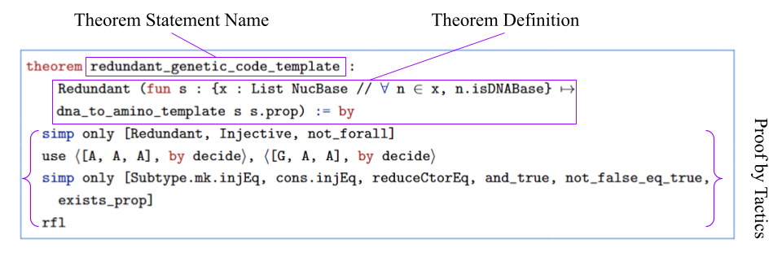
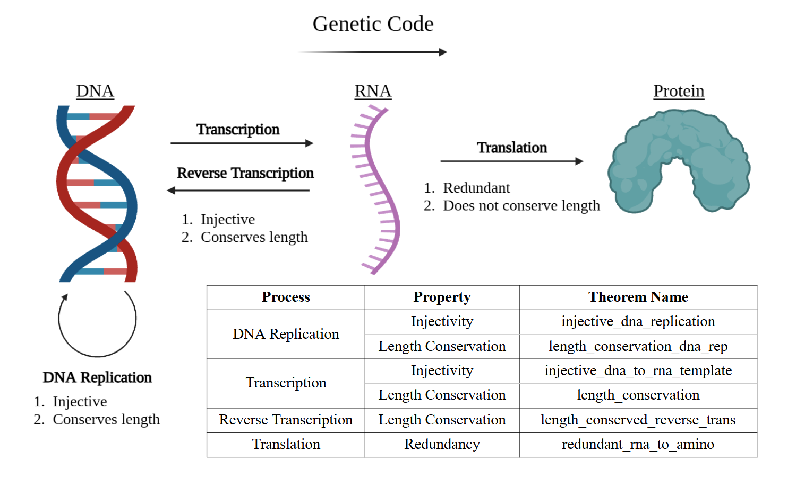

Formalizes transcription, translation, replication and mutation in Lean 4 with Mathlib, proving redundancy and injectivity properties of the genetic code.
Abstract
The genetic code exhibits redundancy, meaning that multiple distinct nucleotide sequences can encode the same amino acid sequence, a property mathematically characterized as non-injectivity. While this phenomenon is well studied in molecular biology, its rigorous verification within a computational framework remains limited. In this work, we present a machine-verified model of the central dogma of molecular biology using the Lean 4 interactive theorem prover. We formalize nucleic acid bases and amino acids as inductive types and define transcription and translation as functions mapping DNA sequences to RNA and subsequently to polypeptides. Within this framework, we prove key properties of these biological processes, including the redundancy of the genetic code, injectivity of transcription, and the non-injectivity of translation. Additionally, we formalize auxiliary processes such as DNA replication and mutation, and verify properties such as length conservation under transcription and point mutations. Finally, we demonstrate how Lean 4 helps prevent semantic errors in our code, showing its effectiveness as a tool for advancing reliable, bug-free scientific computing, particularly within the life sciences.
Problem
The genetic code is redundant: different nucleotide sequences can encode the same amino acid sequence. This property, and the correctness of biological sequence software more generally, has seldom been rigorously machine-verified.
Approach
Nucleic acid bases and amino acids are defined as inductive types in Lean 4 with Mathlib. Transcription (template and coding strands) and translation (codon chunking via List.toChunks and a codon table) are defined as functions. Further functions model DNA replication, reverse transcription and point mutations. The authors also discuss how Lean helps catch syntactic, runtime and semantic errors.

Figure 2 : Lean 4 Proof of Redundancy of the Genetic Code. Sections are outlined in purple showcasing the components to a Lean proof. The Theorem Statement Name is the callback to the theorem. The Theorem Definition is the property or statement that the user is trying to prove. The body of the proof is constructed through tactics.
Results
The formalization proves the non-injectivity (redundancy) of translation by counterexample. It also proves injectivity of transcription, the inverse relationship between transcription and reverse transcription, length conservation under transcription, replication and point mutation, and the equivalence of coding-strand and template-strand translation under reversal. Remaining semantic limitations, such as STOP codon handling, are identified.

Figure 3 : A diagram demonstrating the different processes in molecular biology and a table detailing each property proved and their corresponding theorem names in the code for each process.